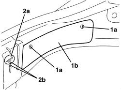
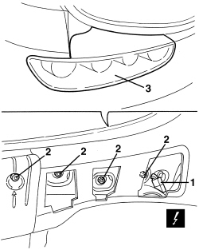
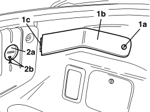
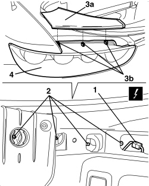

5540A44 REAR LIGHT CLUSTER (ONE), LEFT OR RIGHT - R.R.
- Path
- Procedures > 55 ELECTRICAL EQUIPMENT > 5540 EXTERIOR LIGHTING > 5540A LIGHTING > 5540A44 REAR LIGHT CLUSTER (ONE), LEFT OR RIGHT - R.R.
- Kind
- repair procedure (removal / refitting; the operation number is the code)
- Applies to
- all engines; all production periods
- Interactive page
- https://sloeber94.github.io/elrnDB-aBrrSpdr/en/#/946002383
Applies to: all engines; all production periods
 Removing
Removing
 Refitting
Refitting- Open the tailgate.
1. Rotate the retainers (1a) and remove the cover (1b).
2. Rotate the cover (2a) and remove it.

Applies to: all engines; all production periods
1. Disconnect the electrical connection.
Description | Component |
|---|---|
LEFT REAR LIGHT CLUSTER | |
RIGHT REAR LIGHT CLUSTER |
2. Undo the nuts fixing the rear light.
3. Working from the outside, remove the rear light.

Applies to: all engines; all production periods
Refitting
Removing- Check that the rear light is not damaged.
- Place the rear light in position.
- Tighten the nuts fixing the rear light.
- Connect the electrical connection.
- Position the cover and attach it.
- Position the cover and secure it using the retainers.
- Close the tailgate.
- Check that the rear lights are working.
Applies to: engines: 2.2 JTS, 3.2 JTS; all production periods; only with equipment: Spider
Removing
Refitting- Open the boot lid.
1. Rotate and release retainer (1a) and remove cover (1b) by undoing retainer (1c).
2. Rotate cover (2a) and remove it.

Applies to: engines: 2.2 JTS, 3.2 JTS; all production periods; only with equipment: Spider
1. Detach the electrical connection.
Description | Component |
|---|---|
LEFT TAIL LIGHT | |
RIGHT TAIL LIGHT |
2. Undo the nuts fixing the tail light.
3. Working from inside, release panel (3a) by undoing retainers (3b).
4. Remove the tail light.

Applies to: engines: 2.2 JTS, 3.2 JTS; all production periods; only with equipment: Spider
Refitting
Removing- Check that the tail light is not damaged.
- Place the tail light in position.
- Position the panel and attach the retainers.
- Tighten the nuts fixing the tail light.
- Attach the electrical connection.
- Position the cover and attach it.
- Position the cover and secure it using the retainers.
- Close the boot lid.
- Check that the tail lights are working.
Topics linked from this page (2)
Topics that link to this page (26)
- T025 WIND NOISE FROM THE REAR AREA
- 5010C60 LH OR RH REAR AIR OUTLET VENT (ONE) - R.R
- 5505C82 WIRING BUILT INTO REAR BUMPER R R
- 5540A50 BULB FOR REAR LIGHT CLUSTER (ONE), LEFT OR RIGHT - REPLACE
- 5580H30 PARKING OBSTACLE DETECTION SYSTEM REAR SENSORS - R.R.
- 7055B75 REAR BUMPER CENTRE MOUNT - R R
- 7210B82 R.R REAR CROSSMEMBER
- 7210E66 R.R. REAR BUMPER
- E2010 SIDE LIGHTS/NUMBER PLATE LIGHT - WIRING DIAGRAM
- E2010 SIDE LIGHTS/NUMBER PLATE LIGHT - COMPONENT LOCATION
- E2010 SIDE LIGHTS/NUMBER PLATE LIGHT - WIRING DIAGRAM
- E2010 SIDE LIGHTS/NUMBER PLATE LIGHT - COMPONENT LOCATION
- E2020 DIRECTION INDICATORS/HAZARD WARNING LIGHTS - WIRING DIAGRAM
- E2020 DIRECTION INDICATORS/HAZARD WARNING LIGHTS - COMPONENT LOCATION
- E2020 DIRECTION INDICATORS/HAZARD WARNING LIGHTS - WIRING DIAGRAM
- E2020 DIRECTION INDICATORS/HAZARD WARNING LIGHTS - COMPONENT LOCATION
- E2021 BRAKE LIGHTS - WIRING DIAGRAM
- E2021 BRAKE LIGHTS - COMPONENT LOCATION
- E2021 BRAKE LIGHTS - WIRING DIAGRAM
- E2021 BRAKE LIGHTS - COMPONENT LOCATION
- E2022 REVERSING LIGHTS - WIRING DIAGRAM
- E2022 REVERSING LIGHTS - COMPONENT LOCATION
- E2022 REVERSING LIGHTS - WIRING DIAGRAM
- E2022 REVERSING LIGHTS - COMPONENT LOCATION
- E2031 REAR FOG LAMPS - WIRING DIAGRAM
- E2031 REAR FOG LAMPS - COMPONENT LOCATION